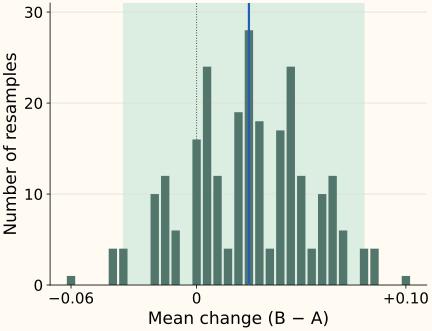

Did Search Improve? Paired Tests, Bootstrap Intervals, and Slices
Before you start: per-query metrics and query averages. We compare two frozen systems on the same judged queries.
System B has a higher average score. Is the gain broad, or did a few queries carry the result? Would another sample of queries plausibly tell a different story? Keep the per-query scores so the comparison can answer more than “which average is larger?”
Our example has four query pairs. It is small enough to inspect every calculation; it is not a reliable launch study. The metric is nDCG at one fixed cutoff, with the same judgments and conventions for both systems.
Subtract within each query first
For each query, compute B’s score minus A’s score. A positive difference favors B; a negative one identifies a regression. The four differences are +0.10, +0.02, −0.06 and +0.04.
Let $m_A(q)$ and $m_B(q)$ denote the two metric scores for query $q$. Write their difference as $d_q$. For $Q$ query pairs, the average change is:
Here the differences sum to 0.10, and dividing by four gives 0.025. This equals the difference between the two means when they include the same queries with the same weights. Preserve query IDs and exclusion rules so that “same queries” is actually true.
Pairing also matters for uncertainty. A hard query may depress both scores together. Keeping its two scores together preserves that shared variation; independently resampling A’s scores and B’s scores would invent comparisons between different queries. Pairing often reduces noise when the two systems’ query scores move together.
Resample whole query pairs, with replacement
For now, suppose these query pairs are independent draws from the population we want to evaluate. A paired bootstrap builds another four-pair sample by drawing from the observed pairs, allowing repeats. It then recomputes the mean difference. Repeat this process to see how the estimate varies under that empirical resampling model.
For example, draw q1, q1, q4, q3. The changes are +0.10, +0.10, +0.04 and −0.06, so the mean is +0.045. Query 1 appears twice and query 2 is absent. A query’s A and B scores always travel together.
There are four choices for each of four positions: 4⁴ = 256 equally likely ordered resamples. We can enumerate all of them here. Moving the slider inspects one possible draw; it does not collect new data.

Read the interval without overstating it
A simple percentile interval takes the lower 2.5% and upper 97.5% quantiles of the bootstrap means. Using the order-statistic convention in the code below gives [−0.035, +0.080]. The range includes losses and gains, so this example does not establish a positive population improvement.
A confidence procedure aims for its advertised coverage across repeated datasets under its assumptions. This particular interval is an estimate, and four queries are too few to trust its nominal 95% coverage. Exact enumeration removes Monte Carlo error from approximating the bootstrap distribution; it does not remove uncertainty from having so little data.
The bootstrap also does not automatically cover annotation errors, test-set leakage or a different future query mix. Repeatedly drawing from the same four queries cannot create rare intents that were never observed. More resamples stabilize the calculation; more representative independent data address the evidence gap.
Python: reproduce the complete toy distribution and its endpoints
We store differences in hundredths so identical arithmetic results land in exactly the same histogram bin. Enumeration is practical only for this tiny example.
from itertools import product
changes = [10, 2, -6, 4] # hundredths: +0.10, +0.02, -0.06, +0.04
resamples = list(product(range(4), repeat=4))
means = sorted(sum(changes[i] for i in draw) / 400 for draw in resamples)
observed = sum(changes) / 400
n = len(means) # 256 ordered resamples
low = means[int(0.025 * n)]
high = means[min(n - 1, int(0.975 * n))]
print(observed, low, high) # 0.025 -0.035 0.08
These are the seventh and 250th sorted values, without interpolation. A general implementation samples rather than enumerates: see the series helper, which uses the same integer-index convention. Record the resampling method, seed and repetitions. If using SciPy bootstrap, set paired=True for paired arrays and choose the interval method explicitly; its default is BCa, not this percentile construction.
When one user contributes several queries, keep the user together
Now change the sampling story: suppose q1 and q2 came from user U1, q3 from U2 and q4 from U3. Queries from the same user can be dependent. Resampling them independently treats a repeated user’s behavior as more independent evidence than it is.
For a user-cluster bootstrap, draw users with replacement and keep all query pairs from each selected user. A selected user appearing twice brings their entire block twice. The number of query rows can change because users have different numbers of queries.
In the original data, query weighting gives +0.025. U1’s mean is +0.06, U2’s is −0.06 and U3’s is +0.04; averaging these three user means gives about +0.0133. Grouping for resampling and choosing the target average are separate decisions. A user-cluster bootstrap can preserve a query-weighted statistic by recomputing the total change divided by the total query count in each resample.
This illustration assumes users are independent blocks. Shared items, organizations or other dependencies can require a different design. Bakshy and Eckles study how ignoring user–item dependence can make intervals too narrow, including cases where accounting for users alone is insufficient.
A hypothesis test asks a different question
A confidence interval estimates a range for an effect. A hypothesis test asks how unusual the observed statistic would be under a specified null model. A p-value is not the probability that the new system is worse, nor a measure of how valuable the change would be.
In a paired randomization test, swapping A and B within a query flips the sign of that query’s difference. Under a null that makes those swaps exchangeable, compare the observed mean with the distribution from allowed swaps. The ordinary bootstrap above instead resamples observed pairs and is centered near the observed effect; it is not automatically a null distribution.
Optional: all sign flips for the four-query example
Four pairs have 2⁴=16 possible sign patterns. In 10 of them, the absolute mean is at least the observed 0.025. The two-sided absolute-statistic randomization p-value is therefore 10/16 = 0.625, under independent within-pair exchangeability. This does not mean there is a 62.5% probability of “no improvement.”
A paired t-test works with the mean and variability of the paired differences under its own assumptions. Choose a method before seeing which yields the most favorable result. Smucker, Allan and Carterette compare several tests on TREC runs; their bootstrap shift test is distinct from the percentile interval illustrated here.
Protect the comparison from repeated selection
Trying twenty configurations and picking the highest test score uses the test set for selection. Tune on validation, freeze a candidate, then evaluate on held-out queries. If several metrics or slices drive formal decisions, plan how to address multiple comparisons and label exploratory findings. Repeated online peeking also needs an analysis designed for sequential monitoring.
Before evaluating, state the smallest useful improvement and acceptable guardrail changes. Our +0.025 is an absolute increase; relative to A’s 0.600, it is about +4.17%. Neither description supplies the missing uncertainty. Evaluate latency quantiles with an analysis appropriate to quantiles rather than assuming a mean-based test answers a p95 question.
Save paired scores, query or cluster IDs, weights, exclusions and the evaluation configuration. Report the overall estimate and interval alongside slice counts and examples of regressions. Use the query-mixture discussion when a diagnostic set differs from traffic, and the next chapter for online outcomes.
References and further reading
- SciPy: bootstrap — paired resampling, percentile/basic/BCa interval choices and the distinction between repetitions and data.
- Smucker, Allan and Carterette: significance tests for IR evaluation — paired randomization, bootstrap shift and t-tests compared on TREC runs; this is not a universal guarantee of equivalence.
- Bakshy and Eckles: uncertainty with dependent data — user–item dependence, cluster resampling and cases requiring more than one grouping dimension.
- SciPy: permutation_test — the exchangeability models and paired-sample permutations used by randomization tests.